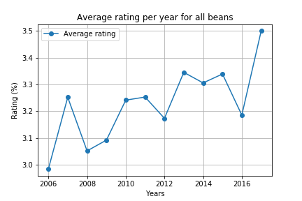
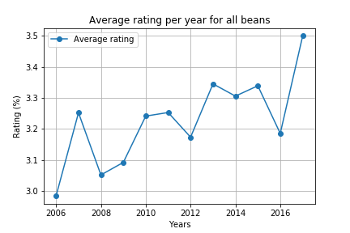

Chocolate
Everybody loves chocolate!
57% of people prefer chocolate to any other candy. In this project we set out to find:
- Where the best chocolate is grown and refined.
- Comparisons in economic trends in origin countries and countries where companies are headquartered.
- Temperature trends in these countries to see how they impact chocolate quality.
- Kaggle: expert ratings of chocolate bars from 2006 to 2017.
- World Bank: GDP for the same years for all the countries mentioned in our main dataset.
- Data.world: Temperature readings for each country from the 1700s to 2013.
General Conclusions
- The best rated chocolate comes from the Trinitario bean.
- Countries that grow cacao for chocolate production are generally poorer than the countries where chocolate companies are headquartered.
- In some cacao growing countries, recent temperature readings have occurred outside of the ideal temperature range for cacao viability.
Difficulties
- We have chocolate dates from 2006 to 2017, but our climate data only goes up to 2013. Given that the past several years have been the hottest on record, our predictions for the future of cacao's viability in its growing climates would be enriched with more recent information.
- Missing data and small data sets served as a barrier for hypothesis testing.
Additional Inquiry
- Humidity is perhaps even more important than temperature for cacao production -- look at global humidity trends in producing countries
- Does chocolate quality correlate with income of cacao farmers? Do companies that make better chocolate pay their farmers better?
- Is it possible to get more granular information about specific company's production processes? Perhaps production methods have more influence on quality than cacao source.
Analysis
After cleaning the dataset, we learned that 1,795 chocolate bars sold in 60 different countries were rated from 2006 to 2017.
Most of the chocolate bars received a rating between 3.0 to 3.5. Only two chocolate bars received the highest rating of 5.
The Rating System is as follows:
- 5 = Elite (Transcending beyond the ordinary limits)
- 4 = Premium (Superior flavor development, character, and style)
- 3 = Satisfactory(3.0) to praiseworthy(3.75) (well made with special qualities)
- 2 = Disappointing (Passable but contains at least one significant flaw)
- 1 = Unpleasant (mostly unpalatable)
 

The data observed is based mainly on the customer preference of chocolate bars. However, one of the essential ingredients of a chocolate bar is the cocoa bean. Most of the chocolate has been produced using 70 to 75 percent of cocoa, as expected manufacturers are choosing not to produce chocolate of 100% cocoa to satisfy consumer taste. These dark bars are the richest, and perhaps won’t give you a sugar rush, as they would not have many other ingredients to mask the taste of cocoa and taste more bitter.


One of the questions we tried to answer is where the best cocoa is grown and sold after refinement. When we looked at where the cocoa bean comes from, we found a couple of different things:
- Most of the rated chocolate bars used cocoa beans that are grown in South America, except for Madagascar.
- We also used the GDP dataset, which determined that the beans come from poorer countries, and the final product is consumed in countries with higher GDP.


As we can see from the graphs, the number one grower is Venezuela, followed by Ecuador, Peru, and the Dominican Republic, and the number one seller are the United States of America, followed by France and Canada.
We also looked at what bean types do we have and found that the most rated bean is Trinitario, followed by Forastero and Criollo.


One other question we tried to answer was, is climate change impacting cocoa beans?
Cocoa plants thrive in regions where temperatures stay within the range of 21ºC to 30ºC. Top cacao growing countries are vulnerable to climate change. On average, temperatures in these nine countries
rose by 0.21 degrees Celsius between 1992 to 2012. The warmer it gets the more in danger the cocoa plants can be.